Stormlet 사용 설명서
Stormlet은 브라우저에서 바로 쓰는 포스트잇 보드입니다. 회고, 브레인스토밍, 이벤트 스토밍처럼 생각을 꺼내 놓고 묶는 일에 맞춰져 있습니다. 계정 없이 이 브라우저에 자동 저장되며, Google Drive에 연결하면 Drive가 기본 저장 위치가 됩니다.
데스크톱 Chrome·Edge·Safari·Firefox 최신 버전에서 쓸 수 있습니다. 아래 화면은 실제 앱에서 자동으로 캡처했습니다.
1. 시작하기
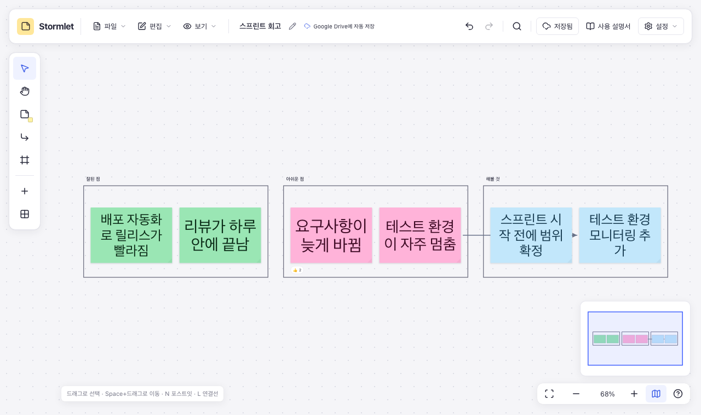
- 툴바
- 파일·편집·정렬·보기 메뉴, 보드 이름(✎로 변경), 저장 위치 표시, 실행 취소·다시 실행, 검색, Google Drive 버튼, 이 사용 설명서, 설정이 있습니다.
- 왼쪽 도구
- 선택, 손(화면 이동), 포스트잇, 연결선, 프레임 도구와 ‘가운데 붙이기’, ‘여러 개 한 번에’가 있습니다.
- 캔버스
- 보드를 그리는 영역입니다. Space+드래그나 손 도구로 움직이고, 휠로 확대·축소합니다.
- 오른쪽 아래
- 모든 메모 보기, 확대·축소, 미니맵, 단축키 도움말 버튼이 있습니다.
2. 포스트잇
- 왼쪽 포스트잇 도구를 누르거나 N을 누른 뒤 보드를 클릭하면 그 자리에 포스트잇이 생깁니다. 바로 입력하세요. 도구 옆 색상 칸을 보드로 끌어다 놓아도 그 색의 포스트잇이 생깁니다. 손가락이나 펜으로도 됩니다.
- Enter나 더블클릭으로 다시 편집하고, Esc로 마칩니다. 줄을 바꾸려면 Shift+Enter를 누릅니다.
- 입력하다 Tab을 누르면 오른쪽에, Ctrl/Cmd+Enter를 누르면 아래에 같은 크기·색의 새 포스트잇이 생기고 바로 이어서 입력할 수 있습니다. 자리가 차 있으면 그다음 빈자리로 갑니다.
- ‘여러 개 한 번에’에 여러 줄을 붙여 넣으면 줄마다 포스트잇이 생깁니다. 엑셀·구글 시트에서 복사한 셀도 그대로 붙여 넣을 수 있습니다.
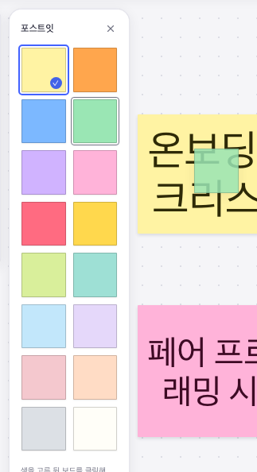
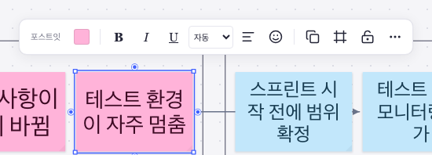
- 16가지 색상, 굵게·기울임·밑줄, 텍스트 정렬을 바꿀 수 있습니다.
- 글자 크기는 메모 크기와 내용에 맞춰 자동으로 조절됩니다. 직접 고른 크기는 글이 들어가는 동안 유지됩니다.
- 네 모서리 손잡이를 끌거나 크기 프리셋으로 크기를 바꿉니다. 자세한 내용은 배치와 정렬에 있습니다.
- 이모지 반응을 달고, 다시 누르면 취소됩니다.
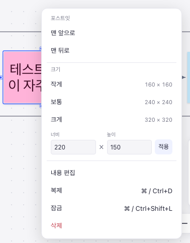
3. 프레임과 연결선
프레임
- F를 누르고 영역을 드래그하면 프레임이 생깁니다. 클릭만 하면 기본 크기로 생깁니다. 가로·세로 레인 프리셋도 있습니다.
- 포스트잇을 선택하고 ‘프레임 만들기’를 누르면 그 메모를 감싸는 프레임이 생깁니다.
- 프레임을 옮기거나 복제하면 안의 포스트잇·하위 프레임·연결선도 함께 움직입니다. 프레임을 지워도 안의 내용은 남습니다.
- 제목을 더블클릭해 이름을 바꿉니다.
연결선
- L을 누르거나 포스트잇 주변의 연결점을 끌어 다른 포스트잇·프레임에 연결합니다. 메모를 옮겨도 연결은 유지됩니다.
- 직선·둥근 꺾임선·곡선, 화살표, 색상(검정·회색·파랑·빨강·초록·보라)·두께·점선, 설명 글을 바꿀 수 있습니다. 다크 모드에서는 검정 선을 밝게 그려 잘 보이게 합니다.
- 한 선의 색상·두께·점선을 바꾸면 다음에 그리는 선도 같은 모양으로 그려집니다. 연결선 도구 막대의 모든 연결선에 이 스타일 적용을 누르면 보드의 모든 선(잠긴 선 제외)을 한 번에 맞춥니다.
- 끝점을 끌어 다른 대상에 다시 연결합니다.
4. 선택과 정리
- 빈 곳을 드래그하면 여러 메모를 한꺼번에 선택합니다. Ctrl/Cmd+A는 모두 선택입니다.
- 여러 메모를 선택하면 정렬·간격 맞춤·크기 맞춤·격자 배치를 쓸 수 있습니다. 배치와 정렬을 보세요.
- 우클릭 메뉴의 같은 색 메모 모두 선택은 그 메모와 색이 같은 메모를 한꺼번에 고릅니다. 색으로 분류한 메모를 옮기거나 묶을 때 편합니다.
- Ctrl/Cmd+G로 묶으면 함께 움직입니다. Ctrl/Cmd+Shift+L로 잠그면 실수로 옮기거나 지우지 않습니다.
- 모든 변경은 Ctrl/Cmd+Z로 되돌릴 수 있습니다. 메모와 함께 지워진 연결선도 함께 돌아옵니다.
- Ctrl/Cmd+F로 메모 내용을 검색합니다.
5. 배치와 정렬
가이드와 스냅
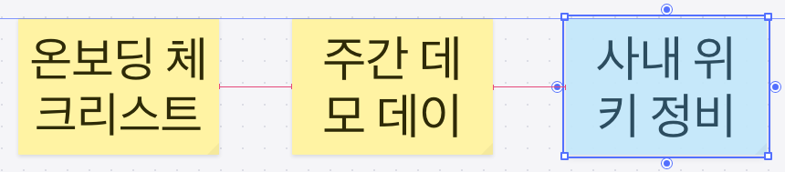
- 메모를 끌면 다른 메모의 가장자리나 가운데와 화면에서 8px 안으로 가까워질 때 그 선에 붙고 파란 가이드가 나타납니다.
- 두 메모 사이 한가운데, 또는 이웃한 메모들 간격을 한 번 더 반복하는 자리에 오면 같은 간격에 붙고 분홍 표시가 나타납니다. 가로·세로 모두 됩니다.
- Ctrl/Cmd를 누른 채 끌면 가이드 없이 원하는 위치에 놓습니다. Mac에서는 Ctrl+클릭이 우클릭이 되므로 Cmd를 쓰세요.
- 프레임도 같습니다. 프레임을 옮기거나 크기를 바꾸면 다른 프레임·메모에 맞춤 가이드가 생기고, 프레임끼리 같은 간격·같은 크기에 붙습니다. 프레임 크기를 바꿀 때는 안의 메모 가장자리에도 맞출 수 있습니다.
- 끄는 동안에는 메모 도구 막대가 잠시 숨어 가이드를 가리지 않습니다.
크기 조절
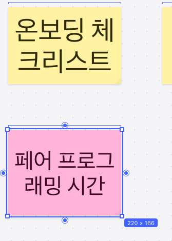
- 메모를 하나 선택하면 네 모서리에 손잡이가 생깁니다. 반대쪽 모서리는 그대로 있습니다.
- 다른 메모와 너비나 높이가 거의 같아지면 그 크기에 붙고, 같은 크기인 메모(가까운 4개까지)에 표시가 생깁니다. 가장자리를 다른 메모의 선에 맞출 수도 있습니다.
- Shift를 누르면 비율을 유지하고, Ctrl/Cmd를 누르면 스냅 없이 조절합니다. 오른쪽 아래 손잡이에 초점을 두고 방향키를 누르면 20px씩 바뀝니다. 여러 메모를 선택했을 때는 점선 상자의 오른쪽 아래 손잡이에서 같은 방향키가 전체 크기를 바꿉니다.
- 여러 메모를 선택하면 전체를 감싸는 점선 상자가 생깁니다. 상자의 모서리를 끌면 모든 메모의 위치와 크기가 비율대로 함께 바뀝니다. 잠긴 메모가 섞여 있으면 손잡이가 나오지 않습니다.
정렬과 크기 맞춤
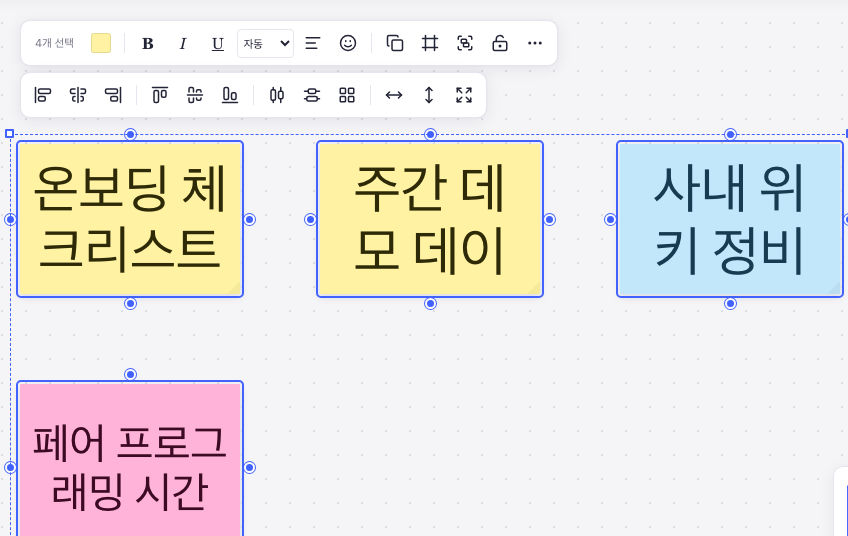
- 배치: 왼쪽·가로 가운데·오른쪽, 위쪽·세로 가운데·아래쪽 맞춤, 가로·세로 간격 맞춤, 격자로 정리. 그룹은 한 덩어리로 움직입니다.
- 크기 맞춤: 너비 같게·높이 같게·크기 같게. 선택한 메모 중 가장 큰 값에 맞추므로 글자가 잘리지 않습니다. 각 메모의 왼쪽 위 모서리는 그대로입니다.
- 단축키: Alt+A/H/D는 왼쪽·가로 가운데·오른쪽, Alt+W/V/S는 위쪽·세로 가운데·아래쪽 맞춤, Alt+Shift+H/V는 가로·세로 간격 맞춤입니다. Mac에서는 Option을 누릅니다.
스타일 복사
메모를 선택하고 Ctrl/Cmd+Alt+C로 색과 글자 서식(굵게, 기울임, 밑줄, 정렬, 글자 크기)을 복사한 뒤, 다른 메모를 선택하고 Ctrl/Cmd+Alt+V로 붙여 넣습니다. 크기와 내용은 바뀌지 않습니다. 우클릭 메뉴의 스타일 복사·스타일 붙여넣기도 같습니다. 복사한 스타일은 새로고침해도 남아 있고, 다른 탭에서도 붙여 넣을 수 있습니다.
격자
보기 → 격자 보기로 20px 간격 격자를 그리고, 보기 → 격자에 맞추기를 켜면 옮기거나 크기를 바꿀 때 격자 선에 붙습니다. 가까운 메모가 있으면 메모 맞춤이 먼저입니다. 두 설정은 따로 켜고 끄며, 다음에 열어도 유지됩니다.
7. 보드는 어디에 저장되나
보드 이름 옆 표시가 지금 보드가 어디에 저장되는지 알려 줍니다.
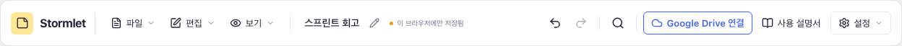
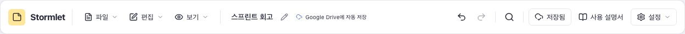
브라우저 저장소는 사이트 데이터를 지우거나 오래 방문하지 않으면(예: Safari의 7일 정리) 사라질 수 있습니다. 중요한 보드는 Google Drive에 두거나 파일로 내려받아 두세요.
사용 통계
Stormlet은 보드 내용을 어디로도 보내지 않습니다. 사이트가 사용 통계를 켜 둔 경우, 처음 방문할 때 익명 사용 통계를 Google Analytics로 보내도 되는지 묻습니다. 허용하기 전에는 아무것도 보내지 않습니다.
- 보내는 것: 페이지 방문, 새 보드·파일 열기·내려받기·이미지 내보내기(형식)를 썼다는 사실, 오류가 났을 때 그 오류의 이름
- 보내지 않는 것: 포스트잇·프레임·연결선의 글, 보드 이름, 파일 이름, 오류 메시지
- 언제든 설정 → 사용 통계 보내기에서 끄거나 켤 수 있습니다. 끄면 전송을 멈추고 Google Analytics 쿠키를 지웁니다.
8. Google Drive
연결하고 저장하기
- 툴바 오른쪽의 Google Drive 연결을 누르고 Google 계정으로 로그인합니다.
-
버튼이 Drive에 저장으로 바뀝니다. 누르고 저장할 폴더를 고르면 보드 이름으로
.stormlet파일이 만들어집니다. - 이후 편집은 잠시 멈출 때마다 자동으로 저장됩니다. 바로 저장하려면 Ctrl/Cmd+S를 누릅니다.
- 한 번 고른 폴더는 모든 탭이 함께 기억합니다. 새 탭이나 새 보드는 처음 편집할 때 그 폴더에 자동으로 저장됩니다.
-
같은 폴더에 같은 이름의 파일이 있으면 파일 이름에
(2)처럼 번호가 붙습니다. 보드 이름은 그대로입니다. -
Stormlet은 직접 만들었거나 Stormlet으로 연 파일만 볼 수 있습니다(
drive.file권한). Drive의 다른 파일에는 접근하지 않습니다. - 로그인은 약 1시간 유지됩니다. 끝나기 10분 전부터 버튼이 연장으로 바뀌고, 앱을 클릭하면 연장됩니다. 열린 탭끼리는 로그인을 함께 씁니다.
다른 곳에서 바뀐 내용 합치기
다른 기기나 탭에서 같은 파일을 고쳤다면 저장할 때 서로 다른 부분은 자동으로 합칩니다. 같은 부분을 양쪽에서 다르게 바꿨을 때만 버튼이 충돌로 바뀝니다. 누르면 항목마다 남길 내용을 고를 수 있습니다.
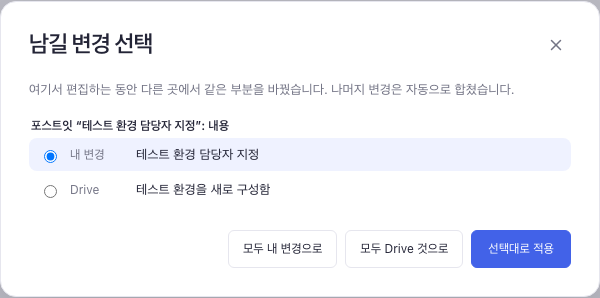
연결 해제와 다시 연결
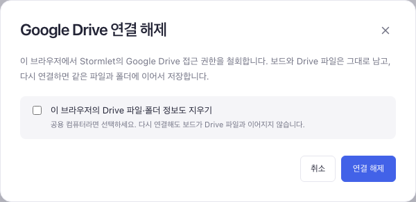
- 연결을 해제해도 보드와 Drive 파일의 연결은 기억합니다. 다시 연결하면 같은 파일에 이어서 저장합니다.
- 공용 컴퓨터라면 이 브라우저의 Drive 파일·폴더 정보도 지우기를 선택하세요.
- 다른 Google 계정으로 연결하면 그 계정의 파일이 아니므로 저장을 멈추고 알려 줍니다.
- 다시 연결한 뒤 파일을 찾을 수 없다고 나오면 Drive 버튼을 눌러 Drive에서 다시 찾기…로 같은 파일을 고르세요.
- 보드마다 Drive와의 연결만 끊으려면 파일 → 동기화 중지를 씁니다.
9. 탭과 보드
Stormlet은 탭마다 자기 보드를 엽니다. 탭마다 다른 보드, 다른 Drive 파일을 열어 둘 수 있습니다.
- 앱을 다시 열면 마지막으로 쓰던 보드로 시작합니다.
- 다른 탭이 열려 있는 상태에서 새 탭을 열면 빈 보드로 시작합니다.
- 새로고침해도 그 탭의 보드는 그대로입니다.
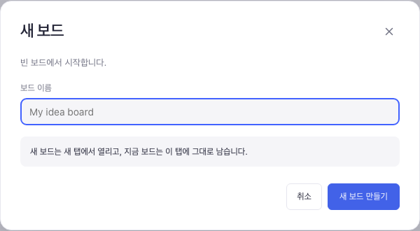
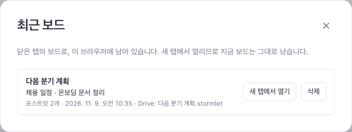
10. 파일 열기·내려받기·내보내기
-
파일 → 파일로 내려받기는 보드를
.stormlet파일로 저장합니다. 파일 이름은 보드 이름을 따릅니다. Drive에 연결되지 않은 보드에서는 Ctrl/Cmd+S도 내려받기입니다. -
파일 → 열기…(Ctrl/Cmd+O)로
.stormlet파일을 엽니다. 여는 것도 실행 취소할 수 있습니다. - Drive에 있는 보드는 파일 → Drive에서 열기…로 엽니다.
- 파일 → PNG 이미지로 내보내기·SVG 이미지로 내보내기는 보드 전체를 그림으로 저장합니다. 문서·메신저·위키에 올릴 때 쓰세요. PNG는 선명하도록 2배 크기로 저장하고, SVG는 확대해도 깨지지 않으며 디자인 도구에서 고칠 수 있습니다. 화면 테마와 관계없이 흰 배경의 밝은 테마로 그리며, 선택 표시나 손잡이는 들어가지 않습니다.
- 아주 큰 보드는 브라우저가 만들 수 있는 이미지 크기 한도 때문에 PNG 해상도를 낮춰 저장합니다. 더 선명한 그림이 필요하면 SVG를 쓰세요.
11. 단축키
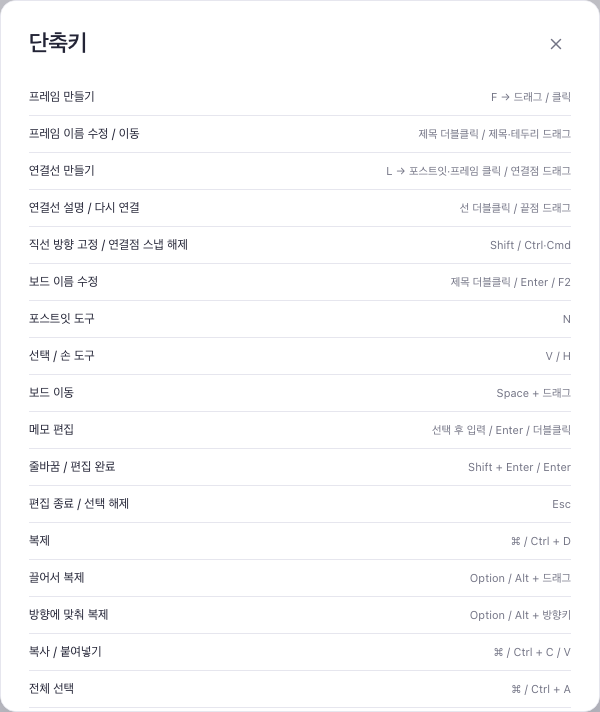
| 동작 | 단축키 |
|---|---|
| 포스트잇 / 선택 / 손 도구 | N / V / H |
| 연결선 / 프레임 도구 | L / F |
| 편집, 줄바꿈, 편집 완료 | Enter, Shift+Enter, Esc |
| 다음 메모 이어 쓰기 (오른쪽 / 아래) | Tab / Ctrl/Cmd+Enter |
| 복제 / 방향에 맞춰 복제 | Ctrl/Cmd+D / Alt+방향키 |
| 그룹 / 그룹 해제 | Ctrl/Cmd+G / Ctrl/Cmd+Shift+G |
| 왼쪽 / 가로 가운데 / 오른쪽 맞춤 | Alt+A / H / D |
| 위쪽 / 세로 가운데 / 아래쪽 맞춤 | Alt+W / V / S |
| 가로 / 세로 간격 맞춤 | Alt+Shift+H / V |
| 스타일 복사 / 붙여넣기 | Ctrl/Cmd+Alt+C / V |
| 크기 조절: 비율 유지 / 스냅 없이 | Shift / Ctrl/Cmd + 모서리 드래그 |
| 스냅 없이 옮기기 | Ctrl/Cmd 누른 채 드래그 |
| 잠금 | Ctrl/Cmd+Shift+L |
| 실행 취소 / 다시 실행 | Ctrl/Cmd+Z / Ctrl/Cmd+Shift+Z |
| 모든 메모 / 선택한 메모 보기 | Alt+1 / Alt+2 |
| 검색 | Ctrl/Cmd+F |
| 파일 열기 / 저장 | Ctrl/Cmd+O / Ctrl/Cmd+S |
12. 자주 묻는 질문
보드 이름 옆에 ‘저장되지 않음’이 떠요.
브라우저 저장 공간이 가득 찼거나 브라우저가 저장을 막은 상태입니다. 보드를 파일로 내려받거나 Drive에 저장하고, 필요 없는 최근 보드를 지워 공간을 확보하세요.
Drive 버튼에 ‘다시 연결’이 떠요.
로그인이 끝났습니다. 버튼을 눌러 다시 연결하면 그동안의 편집을 이어서 저장합니다. 편집 내용은 그동안 브라우저에 남아 있습니다.
다른 기기에서 보드를 열고 싶어요.
보드를 Google Drive에 저장한 뒤, 다른 기기에서 파일 → Drive에서 열기…로 같은 파일을 엽니다. 두 곳에서 고친 내용은 저장할 때 합쳐집니다.
메모가 자꾸 다른 메모 옆에 붙어요.
맞춤 가이드와 같은 간격 스냅 때문입니다. Ctrl/Cmd를 누른 채 끌면 붙지 않고 원하는 자리에 놓입니다. 보기 → 격자에 맞추기가 켜져 있다면 꺼 보세요.
Mac에서 Option+A를 누르면 ‘å’가 입력돼요.
메모를 편집하는 중이라 글자가 입력된 것입니다. Esc로 편집을 마치고 메모가 선택된 상태에서 누르면 정렬됩니다.
문제를 알리고 싶어요.
설정 → 문제 해결…에서 진단 정보 복사를 눌러 버그 리포트에 붙여 넣어 주세요. 앱 버전, 브라우저, 최근 로그가 들어 있고 포스트잇 내용은 들어 있지 않습니다.
언어를 바꾸고 싶어요.
설정 메뉴에서 브라우저 언어, English, 한국어 중 고릅니다. 자동으로 붙는 보드·프레임 이름은 언어와 상관없이 영어로 만들어집니다.